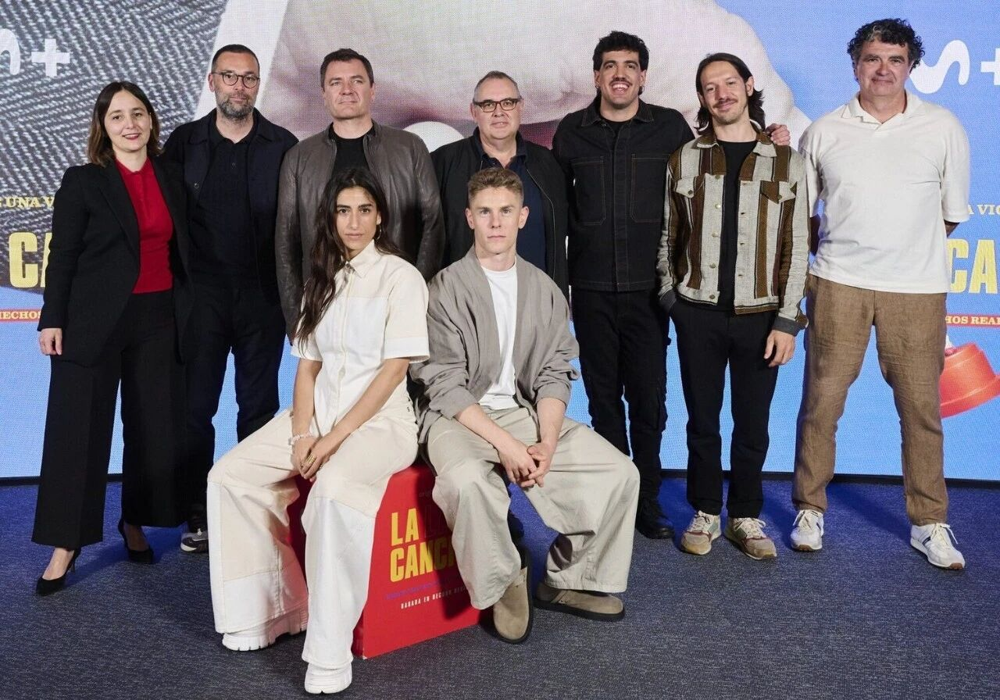
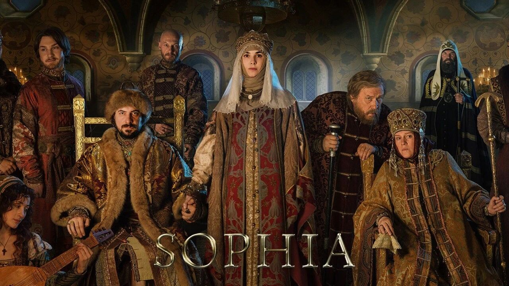

Is the Overseas Short Drama Boom a False Trend? Real Data from the Middle East and Europe
Key Points
- In the Middle East, short-form vertical dramas are gaining momentum despite tight regulation, with distribution increasingly anchored in TikTok-led mobile ecosystems and monetization moving toward e-commerce integration.
- Across Europe, the category faces a double constraint: demanding audience tastes and stricter platform rules, which make imported fast-drama formulas harder to scale without deeper localization.
- Western and Northern Europe reward premium, culturally nuanced storytelling; Southern Europe offers promise through family, moral, and lifestyle narratives beyond the usual billionaire-romance template.
- Central and Eastern Europe, along with Russia and parts of the CIS, offer lower-cost entry and real monetization potential, but success depends on local themes, tailored payment infrastructure, and highly efficient AI-assisted production.
1. Middle East: A Fast-Content Blue Ocean Amid Strong Regulation — Vertical Dramas Are Tying into the E-Commerce Value Chain
Market Snapshot — Middle East
- Total market size: Approximately $4.88 million in 2024.
- Incumbents: TikTok dominates distribution with 233.9 million MAU in MEA (22.55% of global MAU); penetration reaches 138.2% in Saudi Arabia and 123.1% in the UAE. Instagram Reels and YouTube Shorts are also accelerating local ad spend.
- New entrants: Eugenius, a cross-cultural short drama platform, raised $3 million in strategic funding from Abu Dhabi-based Shorooq, positioning itself as a hybrid of "K-drama pacing + Arabized storytelling."
- Regulatory highlights: The UAE's new media law, effective May 29, 2025, requires dual commercial and media licenses, establishes 20 content standards, mandates age ratings and reporting mechanisms, and imposes fines up to AED 1 million (approx. $272,000) for violations.
In the first half of 2025, the Middle Eastern short-drama market continued to show strong vitality. International platforms led by TikTok have laid the foundation for distribution, with user penetration in Saudi Arabia and the UAE reaching 138.2% and 123.1% respectively. TikTok's MEA monthly active users stand at 233.9 million, accounting for 22.55% of its global MAU, making it the dominant force in short drama distribution. Instagram Reels and YouTube Shorts are also accelerating localized ad spending.
At the same time, local innovation is emerging. Eugenius, backed by $3 million in strategic funding from Abu Dhabi-based Shorooq, is combining the pacing of K-dramas with Arab cultural settings, quickly attracting both creators and advertisers. Although the overall market size remains relatively modest — estimated at approximately $4.88 million for full-year 2024 — the high engagement and retention of short dramas make them an increasingly valuable tool for audience acquisition and monetization, suggesting strong growth potential ahead.
Looking ahead to 2026, the short-drama sector in the Middle East will differentiate along several dimensions. First, deeply localized storytelling will matter more: dramas rooted in Arab youth culture, workplace pressure, and emotional realism are likely to win stronger audience recognition. Second, AI-driven workflows will improve efficiency through multilingual dubbing, automated editing, and more precise recommendation systems, cutting both production costs and release cycles. Third, compliance will become a true competitive moat. As regulation tightens, platforms that can operationalize age ratings, content review, and rapid appeals will be better positioned to earn trust. Fourth, the most distinctive commercial innovation may come from the convergence of short drama and commerce, where embedded brand partnerships and direct shopping pathways turn content into a transaction engine.
The most promising players will be those able to integrate three capabilities at once: localized storytelling, AI-enabled production tools, and robust compliance processes. If they can also connect content distribution with advertising demand and e-commerce conversion, they will have a strong chance of standing out in the next phase of competition.
2. Europe: Facing Both High Aesthetic Standards and Regulatory Constraints — Short Dramas Encounter Structural Cultural Discount
Europe offers meaningful commercial potential for short dramas, but it is also one of the most difficult regions to crack. The market is shaped by a combination of high aesthetic expectations, strict regulatory obligations, and a persistent perception that ultra-short vertical drama is a low-cost, low-prestige form. Major broadcasters, studios, and platform operators have begun to test the space, and new AI-video companies are building infrastructure around it, yet the category still faces a structural cultural discount. In practice, that means viewers may sample the format, but acceptance and willingness to pay remain uneven unless the content feels culturally native and aesthetically credible.
Market Snapshot — Europe
- Total market size: Estimated short drama economy in Europe is approximately $1.0-1.2 billion.
- Incumbents: UK Channel 4 (8 "vertical dramas" approved this year); German RTL/Fremantle (short dramas included in London TV Screenings 2025 official slate); French STUDIOCANAL (dedicated fund for <1-minute dramas); ReelShort London studio (signed 40 local writers).
- New entrants: Aive (France) — AI-driven video post-production SaaS, raised €12 million Series A in June 2025, focusing on one-click vertical editing for short dramas. Sea Star Productions (UK) — former documentary team pivoting to 7-10 day "phone drama" production, monetizing through UK creative industry tax credits and B2B custom work. DramaPops / FlexTV — Chinese-backed light-asset platforms registered SPVs in Amsterdam, testing multi-language subtitles and a "buyout + revenue share" hybrid model.
- Regulatory highlights: DSA, AVMSD, AI Act, and various national child online protection laws with constraints on "recurring billing" chapters.
Western and Northern Europe: High Aesthetic Hurdles Exist — "Fast-Paced Stories" Find It Difficult to Overcome the "Slow Culture" Cultural Pecking Order
Region profile — Western and Northern Europe
- Countries covered: UK, Ireland, France, Germany, Netherlands, Belgium, Switzerland, Austria, Nordic Five (Sweden, Norway, Denmark, Finland, Iceland).
- Ethnicity & culture: Predominantly Germanic, Latin, and Celtic populations. High acceptance of globalized and multicultural content. English and French are important cultural media. Economically developed with strong consumer purchasing power.
- Content acceptance traits: High spending power; highly globalized (open to pop culture from North America, Japan, Korea); open to innovative and independent content; high adoption of digital cultural products.
The defining characteristics of Western and Northern Europe in 2025 are "high purchasing power + high aesthetic standards + cautious Wait-and-see." Short dramas here are not seen as a necessary new entertainment form but rather as "low-cost, assembly-line content." Le Monde has described these one-minute vertical dramas as "fabriquées à la chaîne" (mass-produced), forming a low-cost industry. The Guardian used "cringey fantasies" to describe hit titles like Found a Homeless Billionaire Husband for Christmas, quoting audience skepticism: "Do people really pay for this kind of plot?"
Currently, downloads and spending are concentrated among mobile-native users aged 20-35, with monthly active user scale just exceeding 8 million — far below e-books or long-form video in the same region. But incumbents have begun moving incrementally. Public broadcasters treat short dramas as a low-risk A/B testing pool for female-oriented or minority-ethnic themes. External platforms like ReelShort use a combination strategy: buy rights first, then localize with AI dubbing and translation, then monetize per episode.
Meanwhile, two major EU frameworks — DSA and AVMSD — require any algorithm-driven paid funnel to disclose content sources and recommendation logic, and to maintain a 30% "EU local works" quota. This significantly raises compliance costs for overseas platforms.
Looking ahead, opportunities will lie in hybrid innovation combining "fast-paced format + slow-paced soul." Studios that can preserve the character depth of European drama traditions — such as Nordic noir's social metaphors or British dark comedy — within 60-90 seconds will gain support from public cultural funds and platform subsidies for "European works." AI+cloud post-production tools like Aive are pushing per-episode costs down to €10,000-20,000 and can output German, French, and Nordic language versions within hours, directly addressing cross-language expansion and AVMSD quota challenges. Additionally, Europe's high book-reading rates mean publishers are seeking to adapt best-selling light novels into vertical dramas to test screen potential. Teams that can break slow-burn narratives into high-frequency cliffhangers will be well positioned to bridge publishing and film industries.
Southern Europe: Family and Moral Drama Genres Are Stable — The Key Is to Discover the Appeal of "Non-Wealthy Family" Storylines
Region profile — Southern Europe
- Countries covered: Portugal, Spain, Italy, Greece, Cyprus.
- Ethnicity & culture: Predominantly Latin and Greek, deeply influenced by Catholic and Eastern Orthodox traditions. Rich historical and cultural heritage, with strong appreciation for traditional art forms. Economic levels are below Western/Northern Europe but still upper-middle income.
- Content acceptance traits: Strong preference for local and European cultural products; active traditional arts market (opera, classical music, theater); tourism-related cultural products popular; digital penetration gradually increasing among younger generations.
The first half of 2025 presents a clear picture for Southern Europe's short drama market: "strong growth but narrow thematic range." Similarweb's May rankings show DramaBox and ReelShort both entering Spain's Google Play entertainment top-grossing list (8th and 9th respectively), competing alongside long-form giants like Disney+ and Max. Meanwhile, the core business model of the global micro-drama wave — "1-minute pleasure points + paid unlocking" — is localizing quickly. NPR/GPB reported in March that ReelShort's Spanish-language adaptation La doble vida de mi marido billonario alone captured nearly half of the original's 450 million views, pushing the top three short drama apps to 34 million monthly downloads and $78 million in revenue.
Yet industry insiders acknowledge that short dramas in Europe are still in an "early trial" phase. Spring Reel founder Winnie Tang stated bluntly that European market acceptance is "bastante limitada" (quite limited). This tension — "people pay but lack recognition" — has led local content creators to experiment with more culturally grounded micro-dramas. Movistar Plus+ launched a 3x15-minute musical short drama La canción in May, with producers emphasizing they "did not want to make a traditional historical drama but rather faster-paced 'pop-lítica'." This shows that Southern Europe has a genuine need for "spectacular visuals + fast narrative," but has not yet found the next mass-hit template beyond "wealthy-family wish fulfillment."
Looking ahead to late 2025 through 2026, the biggest opportunities lie in dual upgrades: thematic and production. On the thematic front, Southern European audiences have an innate preference for lavish settings and family ethics, but also strong regional pride. "Costa del Sol fantasy" (Game of Thrones style), "musical revenge" crossing Fado/Flamenco/Opera, or even "locker-room intrigue" derived from Champions League football could become the next 10x paid growth drivers. On the production front, AI-driven multilingual dubbing and virtual sets have already pushed per-episode costs down to €10,000-20,000, allowing small teams to produce multilingual versions of 60-second vertical dramas within a week. Combined with the EU's AVMSD 30% local content quota, this can quickly fill platforms' cultural diversity gaps.
The teams that will truly break out are those that simultaneously satisfy three conditions: ① deep understanding of Southern European aesthetics and the ability to find new pleasure points beyond wealthy-family tropes; ② mastery of AI production tools to reduce cycle time and costs to Chinese studio levels; ③ one-stop compliance with DSA/AVMSD's algorithm transparency and local quota requirements. Whoever can package "Mediterranean luxury + high-frequency twists" into a one-minute extreme format will turn Southern Europe into the next box office frontier for short drama globalization.

Central and Eastern Europe: A Cost-Effective Region for Market Entry — Homegrown Themes Will Reconfigure the Content Supply Curve
Region profile — Central and Eastern Europe
- Countries covered: Poland, Czech Republic, Slovakia, Hungary, Romania, Bulgaria, Croatia, Slovenia, Baltic Three (Estonia, Latvia, Lithuania), Balkans (excluding Greece and Croatia).
- Ethnicity & culture: Predominantly Slavic, with many other ethnic groups. Complex history influenced by both Soviet-era and Western European culture. Economies are developing or in transition, with relatively lower income levels.
- Content acceptance traits: Price-sensitive; demand for Western pop culture (especially among younger generations); local cultural revival efforts; digital piracy may be more prominent due to economic factors.
In the first half of 2025, Central and Eastern Europe's short drama economy has just crawled out of the "user acquisition phase" and formally entered the "validation phase" — real money is flowing, but paid revenue remains concentrated in a very small number of breakout hits and a very small number of countries. Similarweb's June rankings show DramaBox and ReelShort consistently occupying the top 3 free entertainment apps on Poland's iOS charts; on Google Play's top-grossing entertainment list in Poland, both rank in the top 20 (ReelShort 9th, DramaBox 16th). Sensor Tower's paid breakdown further indicates that "CEO/tyrant romance" template apps in Poland, Czech Republic, and Romania generate average ARPU of approximately $3-3.50 — only 60% of Western Europe's level — yet have already achieved single-digit million-dollar quarterly revenue (centered on Poland). Other CEE countries — Hungary, Bulgaria, the Baltics — are still in "acquisition testing," with short dramas mostly ranking below 40th place on entertainment paid charts, indicating a highly concentrated "leadership effect" and an overall early-stage regional market.
Local large streamers are still prioritizing resources for long-form video or sports. Most notably, PPF Group's TV Nova and O2 TV announced in February 2025 that they would merge Voyo and O2 TV into Oneplay, with CEO Daniel Grunt stating the goal was to build a "one-stop, comprehensive content" platform. Short dramas have not yet entered the initial "Originals" list, showing that mainstream broadcast groups remain on the sidelines. Meanwhile, TikTok/Reels penetration in Poland and Romania has exceeded 60%, cultivating user habits for vertical storytelling, but the formats that actually drive paid revenue remain imported Chinese-style "fast-paced wealthy-family dramas." Local originals account for less than 5% of top-tier app catalogs and lack breakout hits.
Four major trends will shape the coming year:
① Genre upgrade — "Eastern European folklore" vs. "wealthy-family melodrama": A Mediascope & Ramp community survey of 18,000 respondents shows that 18-34 year old Eastern European viewers are more interested in Slavic folklore horror, WWII/Cold War espionage, and workplace black comedy than traditional billionaire romance (57% chose the former).
② Payment loop — telco direct billing + ultra-low price tiers: Average monthly disposable income in CEE is only about 55% of Western Europe's, making the region price-sensitive. Google Play/Apple Store still support Visa/Mastercard locally, but small-ticket IAP conversion rates are far lower than SMS direct billing. Partnering with operators like T-Mobile Polska, Orange Romania, or O2 ČR for carrier billing or local e-wallets (Blik, Dotpay) is critical to reducing friction.
③ Channel breakthrough — piggybacking on local OTTs: Local OTT platforms like Oneplay, Voyo, and Player.pl are looking for new paid inventory outside monthly subscriptions. Using short dramas as a "marketing funnel front end" — free 3 episodes → carrier billing unlock — can lower customer acquisition costs while helping platforms meet AVMSD's 30% "European work" quota.
④ Cost limits & tech advantages: Generative dubbing plus virtual sets have already pushed per-episode costs below €15,000. CEE also has an additional multilingual synergy: Eastern European languages are linguistically close, so AI TTS can produce Polish, Czech, and Slovak versions in one pass, dramatically shortening ROI cycles.
Teams that can write "Eastern European local pleasure points" into 1-minute structures, simultaneously integrate operator billing and local OTT channels, and use multilingual AI tools to compress per-season costs to one-tenth of traditional long-form drama will have the best chance of moving CEE from "chart testing" to a "multi-million-dollar box office" by 2026. Conversely, overseas wealthy-family melodrama templates that rely solely on paid acquisition may briefly rank high, but in price-sensitive, culturally proud CEE, they cannot build a sustainable moat.
Russia and Some CIS Nations: Part of the Slavic Cultural Circle with Varied Economic Systems — Defying Gravity Despite Payment Hurdles, Where Vintage Storytelling Tests Traffic Viability
Region profile — Russia and some CIS nations
- Countries covered: Russia, Belarus, Ukraine (heavily affected by current conflict, but culturally part of the Slavic sphere).
- Ethnicity & culture: Predominantly East Slavic, deeply influenced by Eastern Orthodox Christianity, with a unique Russian-language cultural sphere. Economic development varies widely, but the overall market size is large.
- Content acceptance traits: Strong preference for local and Russian-language content; selective acceptance of Western culture (pop music, films still have a market but may be subject to political and cultural scrutiny); growing digital content consumption.
In the first half of 2025, the Russian-speaking market (Russia + core CIS countries) has seen the first emergence of a short drama ecosystem with real revenue, though the business model is not yet fully formed. App store data tracker Similarweb indicates that cross-border apps DramaBox and ReelShort have been consistently ranked in the top 20 of Russia's Google Play entertainment paid charts for months. The paid driving force remains "melodrama/wealthy-family/revenge" template dramas, with quarterly ARPU in Russia reaching approximately $3.50. Forbes Russia, in its review of ReelShort and DramaBox's global $900+ million revenue, similarly confirmed that female-oriented, "soapy" fast-paced dramas are currently the only segment that has achieved a viable IAP revenue loop.
In parallel, Russian incumbents are beginning to test the waters. Operator group MTS Media announced at the June St. Petersburg Economic Forum that it would co-produce a package of 20 vertical micro-dramas (1,500 episodes total) with newly established Scroll Studios. The four designated genres are explicitly "East Asian-style romance, short sitcoms, edutainment, and urban romance." MTS CEO Sofia Mitrofanova stated publicly that the goal is "to test the real paid threshold of Russian audiences for content with episodes ≤2 minutes." On the traffic side, VK Klipy provides support: Q1 2025 daily plays reached 325 million, nearly doubling year-over-year, but currently relies mainly on ad revenue sharing rather than IAP.
Payment and compliance are important considerations for short drama commercialization in Russia. Due to Western sanctions, Visa and Mastercard have exited Russia, forcing platforms to rely on SMS billing, Mir cards (Russia's domestic payment card), or operator aggregation billing. Meanwhile, Roskomnadzor has tightened scrutiny on algorithm and data localization, requiring platforms to integrate VK ID or RuStore SDK; otherwise, user acquisition will be systematically weakened. These factors collectively constrain revenue expansion in Russia.
Over the next year, for Russian-language micro-dramas to move from "early trial" to scale, three core opportunities must be addressed:
① Thematic breakthrough: Multiple audience surveys (Mediascope, RBC Trends) show that young Russian-speaking users have significant interest in "local social suspense," "cyber-Soviet retro," and even "military workplace humor." Studios that can embed these cultural symbols into 90-second structures can potentially break out of the single wealthy-family melodrama track.
② Local distribution × payment compliance: Bundling with VK ID, Kion subscription packages, or the three major operators' SMS billing can bypass high external link fees and the absence of credit cards, solving the "can't pay / can't reach payment" problem in two steps. Conversely, foreign standalone apps that do not integrate with the local payment stack will see rising customer acquisition costs.
③ Russian-style cost control: Local producers are focusing on hybrid pipelines of virtual sets plus AI multilingual dubbing, compressing per-episode budgets to below 20% of traditional web dramas, then launching via VK Klipy or RuStore to obtain promotional placements, achieving "low budget — high penetration."
The teams that can simultaneously achieve Russian-language original themes, compliant payment loop, and ultra-low production costs will have the best chance of pushing the current paid penetration rate (less than 5%) toward a truly scalable market.

- [1] Backlinko. TikTok Statistics You Need to Know in 2026. Backlinko.com, 2026. backlinko.com/tiktok-users.
- [2] ElectroIQ. TikTok Statistics. ElectroIQ.com. electroiq.com/stats/tiktok-statistics.
- [3] Dash Venture Labs. MENA Startups Secured $1.5 Billion in Q1 2025 Funding. LinkedIn Pulse, 2025. linkedin.com/pulse/mena-startups-secured-15-billion-q1-2025-funding-dash-venture-labs-mpzaf.
- [4] Times of India. UAE Enacts New Media Laws: What You Need to Know. The Times of India, April 2025. timesofindia.indiatimes.com/.../121615463.cms.
- [5] Cognitive Market Research. Global Short Form Video Market Report 2026. CognitiveMarketResearch.com, 2026. cognitivemarketresearch.com/short-form-video-market-report.
- [6] Times of India. Check It Out: TikTok Unveils New Tools and Features for UAE Users. The Times of India, April 2025. timesofindia.indiatimes.com/.../121697307.cms.
- [7] KR Asia. Why the UAE Is the Next Stop for China‘s Short Drama Wave. KR-Asia.com, 2025. kr-asia.com/why-the-uae-is-the-next-stop-for-chinas-short-drama-wave.
- [8] Bakare, L. ‘I could watch them for hours’: how vertical dramas made for phones have gripped viewers. The Guardian, April 4, 2025. theguardian.com/tv-and-radio/2025/apr/04/tv-serials-vertical-drama-phones-grip-viewers.
- [9] Agence Raoul. Aive raises 12 million euros to become the world's leader in automated video post-production. GlobeNewswire, June 5, 2025. globenewswire.com/.../Aive-raises-12-million-euros.
- [10] Le Monde. Des microséries avec des épisodes d’1 minute à regarder à la verticale. Le Monde, June 7, 2024. lemonde.fr/.../des-microseries-avec-des-episodes-de-1-minute.
- [11] Similarweb. Top Grossing Entertainment Android Apps Ranking in Spain. Similarweb.com, April 15, 2026. similarweb.com/top-apps/google/spain/entertainment/top-grossing.
- [12] GPB News. Told one minute at a time: Micro-dramas are soap operas designed to fit in your hand. Georgia Public Broadcasting, March 19, 2025. gpb.org/news/2025/03/19/told-one-minute-time-micro-dramas.
- [13] El País. Microseries con capítulos de un minuto para el móvil: el formato que causa furor en China. El País, January 19, 2025. elpais.com/television/2025-01-19/microseries-con-capitulos-de-un-minuto.
- [14] Rodera, A. & Alabadí, H. Movistar revive ‘La canción’ con la que ganamos Eurovisión: ‘No queríamos hacer una serie histórica’. FormulaTV, May 6, 2025. formulatv.com/noticias/movistar-revive-la-cancion-ganamos-eurovision-133004.
- [15] Similarweb. Top Grossing Entertainment iOS Apps Ranking in Poland. Similarweb.com. similarweb.com/top-apps/apple/poland/entertainment.
- [16] ScreenVoice. Voyo and O2TV Will End, OnePlay Will Come Instead. ScreenVoice.cz. screenvoice.cz/en/news/voyo-and-o2tv-will-end-oneplay-will-come-instead.
- [17] Forbes Russia. Оборотни-миллиардеры: как в Китае монетизируют любовь к фанфикам и дешевым мелодрамам. Forbes.ru. forbes.ru/tekhnologii/513107-oborotni-milliardery.
- [18] Cableman. МТС Медиа экспериментирует с запуском вертикальных мини-сериалов. Cableman.ru. cableman.ru/content/mts-media-eksperimentiruet-s-zapuskom-vertikalnykh-mini-serialov.
- [19] Batyrоv, T. VK опубликовал результаты первого квартала. Коммерсантъ, April 24, 2025. kommersant.ru/doc/7677516.
- [20] Fedoseeva, L. 7 трендов в коротких видео, которые будут актуальны в 2025 году. РБК Тренды. trends.rbc.ru/trends/social/676c4a2a9a7947be27755fdc.